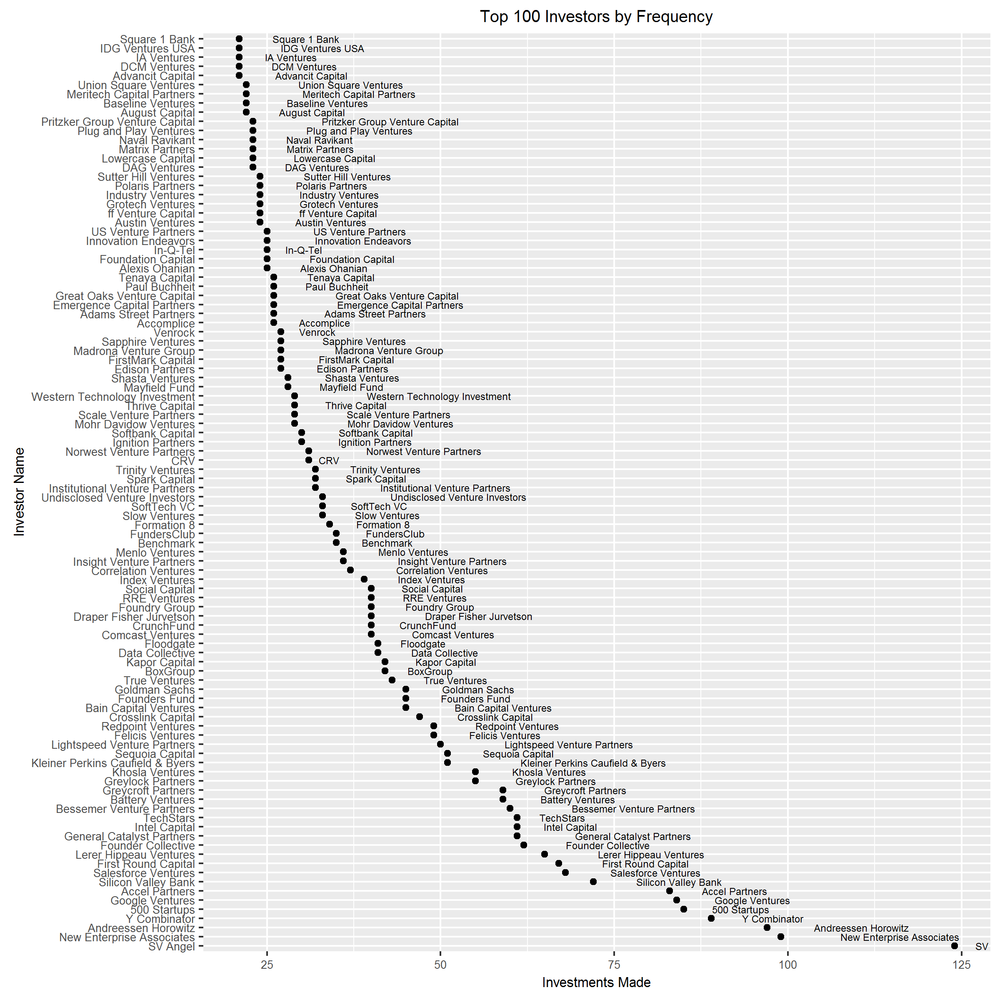
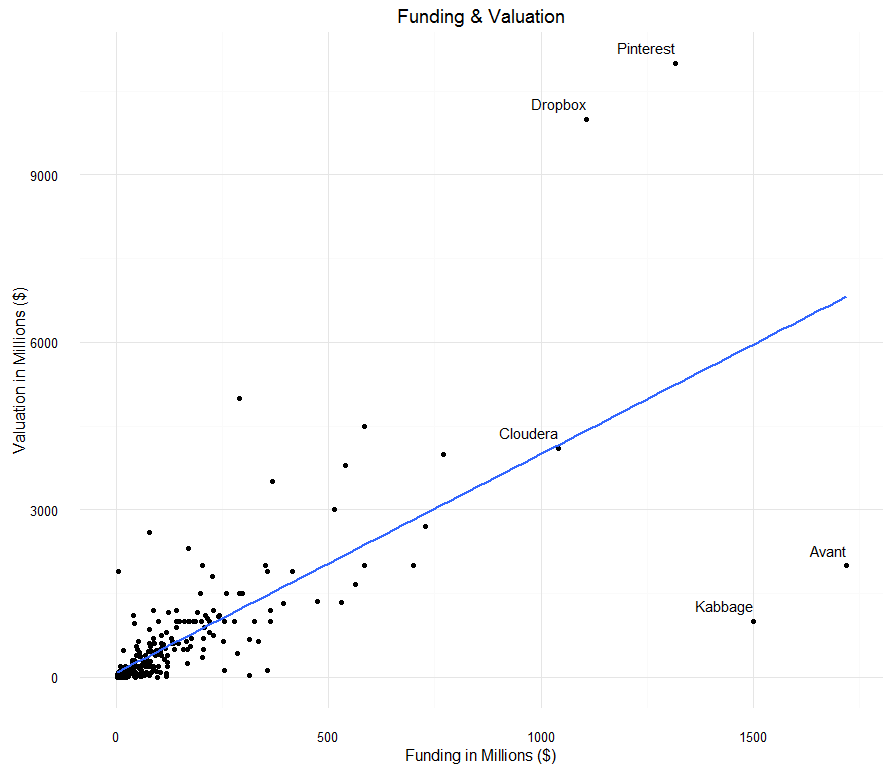

Unicorn Cowboys
Here’s a simple riddle: if people are worried about a tech bubble, famous venture capitalists are saying that the sky is falling and startups are being repriced at lower valuations, then are we in a tech bubble? One answer might be that the term “tech bubble” is poorly defined and not very useful (this is true), but that is not very helpful.

People want to know if now is a good, i.e. cheap, time to start a company or make money investing in startups. This is a mistake of chasing unicorn dreams. If it is cheap to borrow money or raise equity for you, it is probably cheap for your competitors as well. That is one reason so many great companies are founded in tough times. Hewlett-Packard was founded during the Great Depression. LoudCloud, Ben Horowitz and Marc Andreessen’s company, IPO’d in 2001 after the dot com crash. Google went public in the VC winter of 2004. Instead of trying to solve the riddle above, let’s take a look at the unicorn wranglers to see what they know about the industry.
Here’s a graph (click to expand) of the top 100 most active investors in an internet company dataset provided by CBInsights.

It looks like a power law effect with SV Angels leading New Enterprise Associates (NEA) and Andreessen Horowitz (a16z) by a substantial amount. Then Y Combinator, 500 Startups, Google Ventures and Accel round out the top seven. From there it’s another large step down to Silicon Valley Bank (SVB), Salesforce Ventures and First Round Capital. This by itself, is not so enlightening.
The real question is, what do the good ones know that most people don’t know? The conventional wisdom around venture capital it is a grand slam business. Since most investments fail, you are dependent on outsized returns from the few that succeed. This means that the firms that can attract the best deals get a bigger share of the winnings. Is this true? Hard to say, but let’s look at some of the data. Here’s a scatterplot of all the companies in my dataset with their funding amount on the x axis and maximum valuation on the y axis.

Only five companies in the database raised more than one billion dollars in funding in the last three years. Two, Dropbox and Pintrest, were valued at over $10 billion and two were valued the same as companies who raised less than half of the funding they did. Basically, the more funds a company raises, the less certain we are about its outcome. Another way to put this is, all big companies must raise a lot of money, but not all companies that raise a lot of money will be big companies. Again, not the most surprising. That blue line you see, by the way, is the result of a linear regression which explains 52% (R^2) of the variation of the valuation. Not bad for a single independent variable. Let’s take a closer look at our two under performers. They seem to have a fair amount in common. Both are lending companies; Kabbage is B2B and Avant is consumer. Both are based outside of major tech hubs; Kabbage in Atlanta and Avant in Chicago. Both have many bank, hedge fund and non venture capital investors. Cloudera sits neatly on the line, but I don’t have a ton to say except that it’s almost a 4x average return which is good, but not dominant.
This raised the question, are these markets winner take all? Let’s take a look at some of these markets by sub industry. CBInsights breaks it into 52 various industries from Accounting & Finance to Website Hosting. Below is a grid of graphs for each sub industry by color. It’s pretty large so please click to zoom in.
The table below points out some of the sub industries that jump out and their category winners:
| Sub Industry | Company Name | |
|---|---|---|
| Collaboration & Project Management | Slack | |
| Data Storage | Dropbox | |
| Database Management | Cloudera | |
| HR and Workforce Management | Zenefits | |
| News & Discussion | Vice Media | |
| Payments | Stripe | |
| Social | Pintrest |
It seems likely that there are winners in categories, but I can’t prove that each sub industry is a winner take all market. Let’s look again at the total market, this time color coded by sub industry. It’s pretty clear just how few winners there are and how sub industry may play a role in that. Curiously, the best performers and the worst performers were both fintech, with Stripe and payments outpacing any other sub industry but lending struggled.

It’s difficult to draw any conclusions, but here’s what I would say with confidence:
- There are many ways a startup can fail, but successful startups must all do the same things well.
- Some sub industries are dominated by a big winner, but not all sub industries have a winner.
- No sub industries have multiple big winners. That is, sub industries appear to be winner take all.
- Greater total funding is mildly predictive of good exits, but the more funding, the greater the variability.
I’m not quite done with this data set yet. I am going to build a new table that organizes the data by investor instead of by company and see what I can learn. Here are a few questions I hope to answer:
- Can VC’s have a competitive advantage?
- Are top firms over represented in good investments?
- Does making more investments give you a better chance of hitting a grand slam?
- Are any firms/angels good at picking a small number of winners?
If you have any other questions, please let me know!
Thank you CBInsights for the data and Neeraj, Matt and Chris for your help organizing my thoughts. This dataset contains 2442 companies that raised at least $2.5 million from 2013-2016 across stages, geographies, and sub industries.